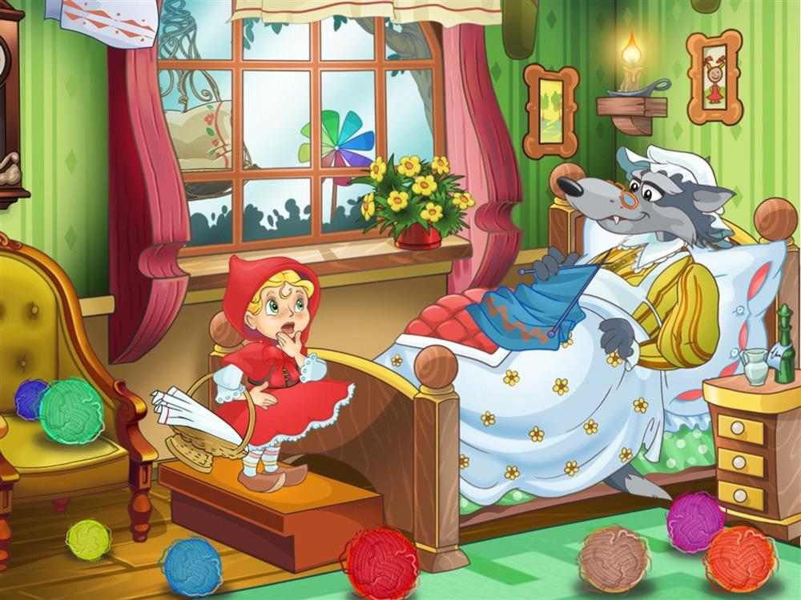

Era uma vez uma bela e ingênua menina que vivia com a mãe. Ela era encantada pela avó - e avó por ela.
A menina usava sempre uma capa com capuz vermelho, por isso era chamada por todos de Chapeuzinho Vermelho.
Um belo dia a avó adoece e a mãe de Chapeuzinho pergunta se a menina poderia levar algo para a avó comer. A casa da menina ficava na vila e a da avó no meio da floresta, a uma certa distância.
A menina prontamente se mostra disposta a ajudar. A mãe lhe entrega uma cesta com o alimento e lhe dá ordens claras para que não fale com estranhos e siga pelo caminho mais curto.
Ainda no início do caminho rumo a casa da avó, a garota é interrompida por um Lobo, que se mostra muito gentil.
Voltar 